Your new photo has a plain light wall behind it, so I cut the background out and put you on the brand colours. The photo itself is not recoloured. Each diagonal banner is shown with the avatar that fits it best and one alternative.
My pick
Leaf background with the moth wings behind you, next to the crimson banner (D2). The line moth frames your head like wings and ties the avatar to the banner.
Simplest
A flat brand colour behind you, opposite to the banner: leaf or violet next to crimson, violet next to leaf.
Rule of thumb
The avatar background should not repeat the banner colour; one step around the palette keeps the circle readable.
New photo
D1 · Leaf
Recommended · violet + moth wings
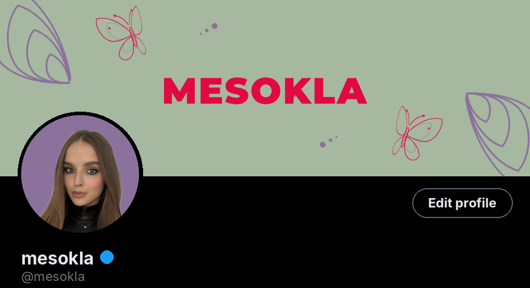
Alternative · violet background
D2 · Crimson
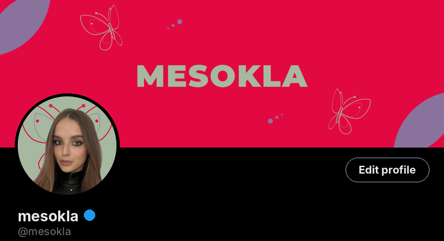
Recommended · leaf + moth wings
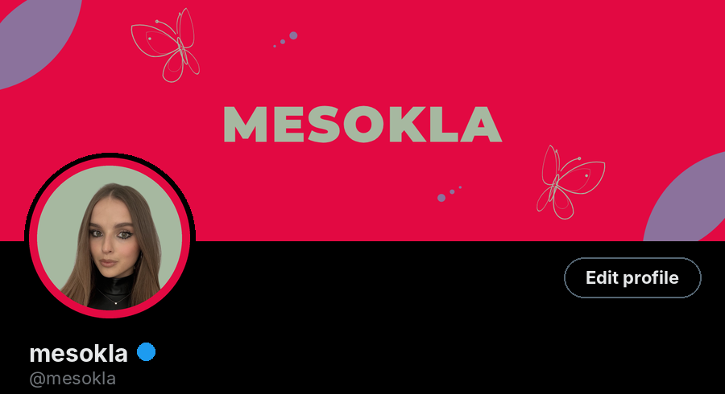
Alternative · leaf + crimson ring
D3 · Violet
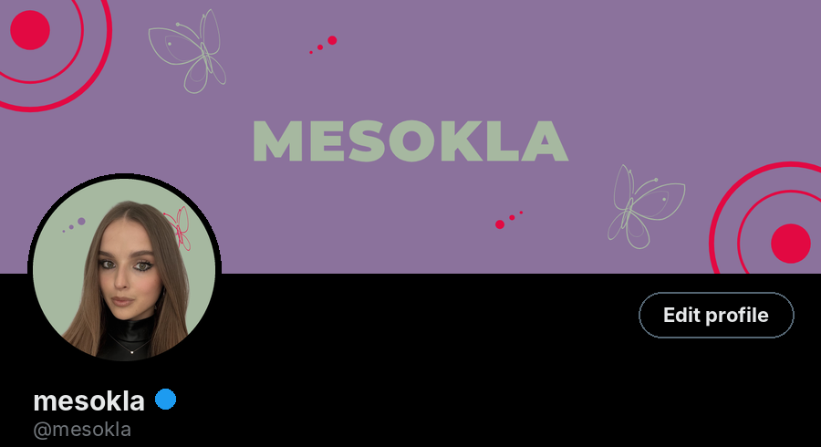
Recommended · leaf + flying moth
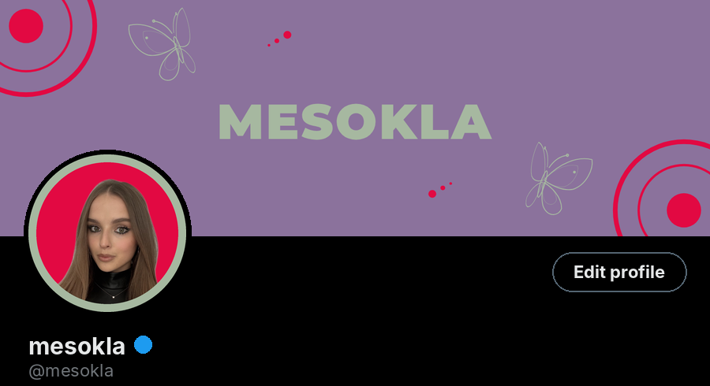
Alternative · crimson + leaf ring
D4 · Leaf + trails
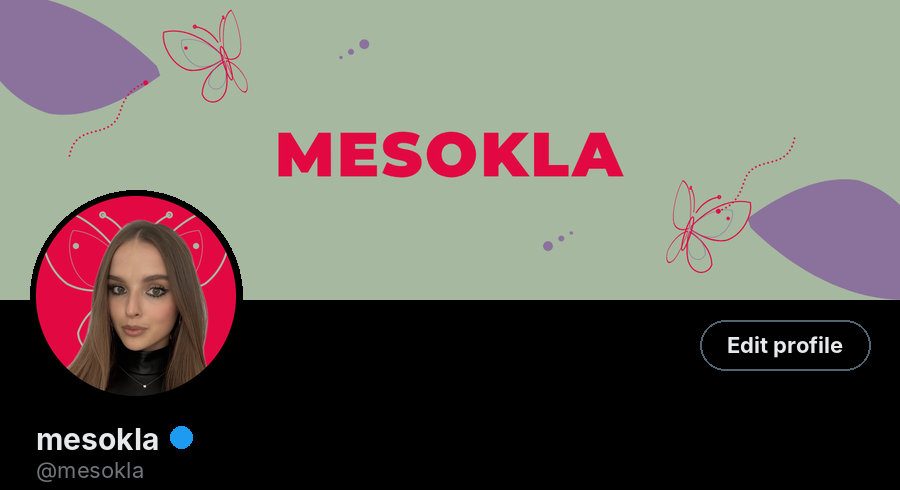
Recommended · crimson + moth wings
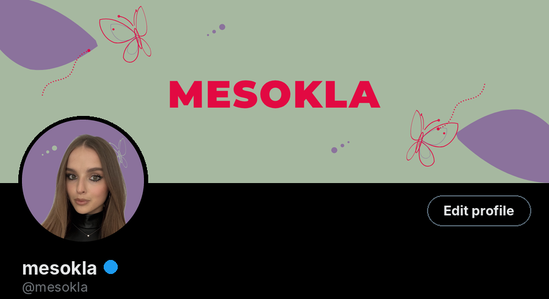
Alternative · violet + flying moth
D5 · Violet + trails
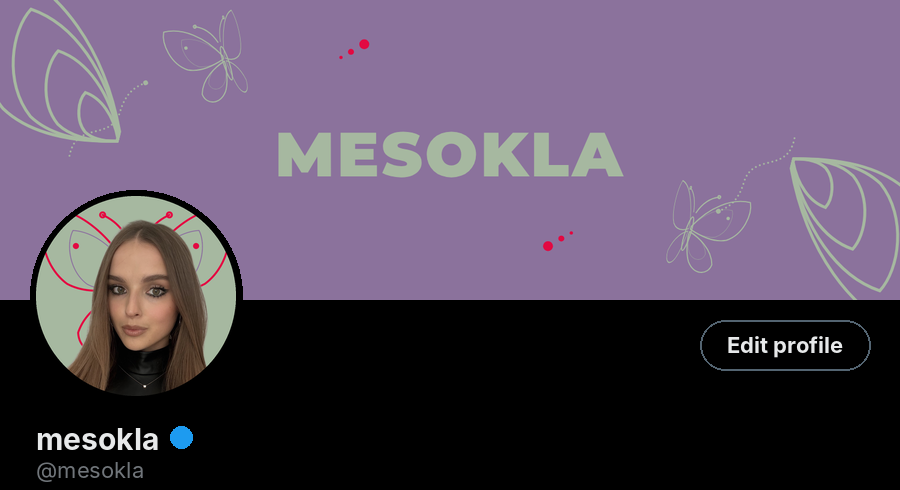
Recommended · leaf + moth wings
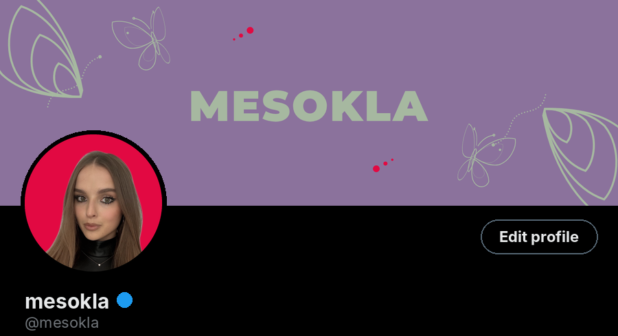
Alternative · crimson background
New photo · all avatar options
400×400, ready to upload. X crops to a circle.
Leaf backgroundPlain leaf behind you. Calm, pairs with crimson and violet banners.Violet backgroundPlain violet. Pairs with leaf banners.Crimson backgroundPlain crimson. The boldest, pairs with leaf and violet.
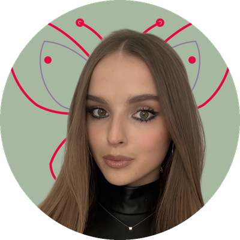
Leaf + moth wingsThe line moth behind you, so its wings frame your head. Most on-brand.Violet + moth wingsMoth wings in leaf on violet.
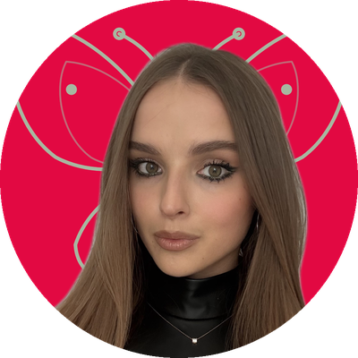
Crimson + moth wingsMoth wings in leaf on crimson.
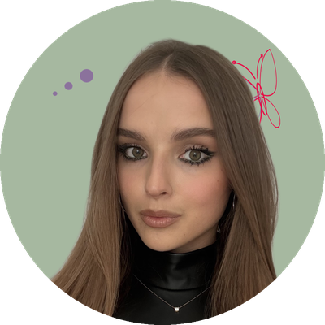
Leaf + flying mothA small crimson moth flying by, plus dots.Violet + flying mothA small leaf moth on violet.Leaf + crimson ringLeaf background inside a crimson ring.Violet + leaf ringViolet background inside a leaf ring.Crimson + leaf ringCrimson background inside a leaf ring.
Current photo
The car selfie can’t lose its background cleanly, so it gets a ring or a badge instead.
OriginalCurrent photo, untouched.Crimson ringPops on leaf banners.Leaf ringBest on crimson and violet banners.Violet ringQuiet and elegant on leaf.Leaf badgePhoto in a leaf disc with the moth.Violet badgeSame on violet.Crimson badgeSame on crimson.